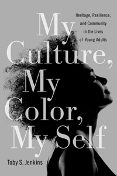

<body bgcolor="#FFFFFF" text="#000000" link="#0000FF" vlink="#CC0000" alink="#CC0000"><center><hr width="350" size="1" align="center" noshade>An authentic picture of culture among young adults of color<hr width="350" size="1" align="center" noshade><p><a href="https://cdcshoppingcart.uchicago.edu/Cart/ChicagoBook.aspx?ISBN=9781439908297&&PRESS=temple" target="_top">Buy this book!</a> | <a href="https://cdcshoppingcart.uchicago.edu/Cart/Cart.aspx?PRESS=temple" target="_top">View Cart</a> | <a href="https://cdcshoppingcart.uchicago.edu/Cart/Cart.aspx?PRESS=temple" target="_top">Check Out</a></p><p></p></center><!--none//--><h1>My Culture, My Color, My Self</h1>
<H2>Heritage, Resilience, and Community in the Lives of Young Adults</H2>
<h3>Toby S. Jenkins</h3>
<P>cloth 1-4399-0829-X $80.50, Mar 13, <FONT COLOR=#990033>Available</FONT>
<br>paper 1-4399-0830-3 $25.95, Mar 13, <FONT COLOR=#990033>Available</FONT>
<br>Electronic Book 1-4399-0831-1 $25.95 <FONT COLOR=#990033>Available</FONT>
<BR> 204 pp
6x9
2&nbsp;figures
</P><BLOCKQUOTE><I>"Kudos to Toby Jenkins for amplifying the diverse voices of our diverse students. Because the cultural experiences of today’s students are not monolithic, educators should heed the recommendations put forth in </i>My Culture, My Color, My Self<i> as a means to better educate and learn from the twenty-first-century student. The benefits that accrue from educating these students well will have a long-term positive impact on not only their individual lives but also society at large."</I><br>&#151<b>Michelle Asha Cooper</b>, President, Institute for Higher Education Policy<I></I></BLOCKQUOTE>
<P>Understanding our cultural heritage and sharing a cultural community's history helps motivate individuals to take agency and create change within their communities. But are today's youth appreciative of their culture, or apathetic towards it?
<P>In her vibrant ethnography <I>My Culture, My Color, My Self</I>, Toby Jenkins provides engrossing, in-depth interviews and poignant snapshots of young adults talking about their lives and culture. She recounts D'Leon's dream to become a positive example for African American men, and Francheska describing how her late mother inspired her appreciation of her Boricua heritage. In these and other portraits, Jenkins considers the role that cultural education and engagement plays in enhancing educational systems, neighborhood programs, and community structures.
<P><I>My Culture, My Color, My Self</I> also features critical essays that focus on broader themes such as family bonds, education, and religion. Taken together, Jenkins shows how people of color use their culture as both a politic of social survival and a tool for social change.
<BR>&nbsp;<h2>Excerpt</h2><P>Excerpt available at <a href="http://www.temple.edu/tempress">www.temple.edu/tempress</a></p>
<BR>&nbsp;<h2>Reviews</h2>
<p><i>"Toby Jenkins is a great American scholar and writer. By not only addressing the many challenges confronting our nation but also focusing on dialogue and solutions, she represents the new wave of thinkers. This is what makes </i>My Culture, My Color, My Self<i> such a valuable contribution to the ongoing national conversation about race, culture, and identity. Jenkins shows us not only how to take those necessary and sometimes uncomfortable looks in the mirror but also how we—as Americans, as human beings, as sisters and brothers—can become bridge builders for ourselves, for our children, for our America."</i><br>&#151<b>Kevin Powell</b>, activist, writer, public speaker, and entrepreneur
<p><i>"The cultural self-portraits in this study create a foundation for a depth of understanding too often absent from traditional scholarship. Jenkins’s use of narrative, storytelling, poetry, and complex analysis drawing on critical race theory and transnational feminism reflects great wisdom and cultural leadership. These stories will, as they did for me, lead all readers to explore their own cultural ‘homes.’"</i><br>&#151<b>Susan R. Komives</b>, Professor Emerita, Student Affairs Graduate Studies, University of Maryland
<BR>&nbsp;<h2>Contents</h2><P>
<p>Acknowledgments
<br>Prologue: My Culture, My Color, My Self
<br>Introduction: Cultural Leadership: The Audacity in the Ordinary
<br>1. There's No Place like Home: An Ethic of Cultural Love
<br>2. A Half-Full Glass of Family Bonds
<br>3. A Politic of Survival
<br>4. Education, Culture, and Freedom
<br>5. Art, Land, and Spirit
<br>6. Cultural Heritage Still Matters
<br>7. The House That Struggle Built: A Portrait of Culture
<br>Epilogue
<br>Appendix: Research Methods
<br>Notes
<br>References
<br>Index
</P><BR>&nbsp;<H2>About the Author(s)</H2>
<P><b>Toby S. Jenkins</b> is Assistant Professor of Higher Education and Integrative Studies at George Mason University.</P>
<BR><H2>Subject Categories</H2>
<p><A HREF="/tempress/education.html" TARGET="_top">Education</a>
<BR><A HREF="/tempress/race.html" TARGET="_top">Race and Ethnicity</a>
<BR><A HREF="/tempress/cultural.html" TARGET="_top">Cultural Studies</a>
</p>
<p align="center"><a href="https://cdcshoppingcart.uchicago.edu/Cart/ChicagoBook.aspx?ISBN=9781439908297&&PRESS=temple" target="_top">Buy this book!</a> | <a href="https://cdcshoppingcart.uchicago.edu/Cart/Cart.aspx?PRESS=temple" target="_top">View Cart</a> | <a href="https://cdcshoppingcart.uchicago.edu/Cart/Cart.aspx?PRESS=temple" target="_top">Check Out</a></p><p><font face="Arial" size="1"><a href="copyright.html" onMouseOver="window.status='Web Copyright Policy';return true;" onMouseOut="window.status=''" title="Web Copyright Policy">&copy;</a> 2015 <a href="http://www.temple.edu" target="new" onMouseOver="window.status='Link to Temple University home page';return true;" onMouseOut="window.status=''" title="Link to Temple University home page">Temple University</a>. All Rights Reserved. http://www.temple.edu/tempress/titles/2192_reg.html</font></p>